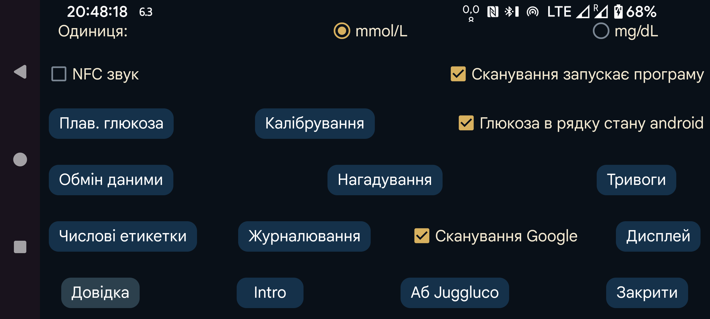

Виберіть mmol/L або mg/dL для відображення глюкози.
Під час сканування додатково до вібрації відтворювати звук.
Якщо параметр позначено, програма запускатиметься під час NFC-сканування датчика, навіть коли вона не відкрита. Якщо цей параметр мають кілька програм, Android показує вибір програми. На практиці ні одноразовий вибір, ні призначення типової програми не працюють, тому без програми на передньому плані сканувати не вдається. Вимкнення параметра в цій програмі дає змогу хоча б одній іншій програмі запускатися таким способом.
За наявності root-доступу можна також вимкнути запуск програми Abbott LibreLink через NFC; це не працює з Libre 3:
Отримайте root у adb shell або Termux і введіть:
pm disable com.freestylelibre.app.nl/com.librelink.app.ui.common.NFCScanActivity
На Librelink 2.7.1 і нижче вам потрібно було натиснути:
pm disable com.freestylelibre.app.nl/com.librelink.app.ui.common.ScanSensorActivity
com.freestylelibre.app.nl тут означає нідерландську версію LibreLink; замініть її назвою своєї версії. Назву можна знайти командою, навіть без root:
pm list package freestylelibre
Після цього LibreLink і далі може сканувати, коли перебуває на передньому плані, але не запускатиметься автоматично. LibreLink 2.5.2 і новіші аварійно завершують роботу, якщо виявляють root. У Magisk root легко приховати: перейменуйте Magisk і додайте окремі програми до DenyList у Magisk 24.3 або MagiskHide у Magisk 23.0. Juggluco також слід додати до списку. Якщо ви не використовуєте американські датчики FreeStyle Libre 2, можна встановити старішу версію LibreLink без перевірки root.
Без root у adb shell можна вимкнути всю програму:
pm disable-user --user 0 com.freestylelibre.app.nl
Перед зверненням до служби підтримки Abbott її можна знову ввімкнути командою:
pm enable com.freestylelibre.app.nl
Раніше параметр називався «Глюкоза в рядку стану Android». Коли його ввімкнено, потокові значення глюкози, отримані через Bluetooth, беззвучно показуються у сповіщенні й рядку стану Android. Якщо вимкнути, замість числа показується крапка, а сповіщення містить лише текст «Для з’єднання з датчиком» або «Для обміну даними». Android вимагає видимого сповіщення від програми, яка постійно працює у фоні, інакше легко зупиняє її. Juggluco вимикає сповіщення лише тоді, коли параметр «Датчик через Bluetooth» вимкнено й немає дзеркальних з’єднань.
На деяких смартфонах значення глюкози з’являється в рядку стану лише після зміни параметрів сповіщень Android. Наприклад, на Realme GT 5G потрібно відкрити список програм→Juggluco→Керування сповіщеннями, вибрати glucoseNotification і вимкнути «Без звуку». Після цього «Показувати в рядку стану» буде ввімкнено.
Сповіщення Android також можна створити, вибравши Повідомити у лівому середньому меню. У такому разі сповіщення може надсилатися на деякі розумні годинники, якщо це налаштовано. Це працює з Garmin; щодо інших годинників невідомо. Сигнали також створюють сповіщення.
Коли параметр увімкнено, невелике вікно з поточним значенням глюкози постійно присутнє на екрані незалежно від активної програми. Під час першого ввімкнення відкривається список програм, де Juggluco потрібно надати дозвіл показувати поверх інших програм.
Налаштування сигналів високої й низької глюкози, втрати зв’язку та сповіщення про відновлення значення.
Укажіть мітки для введених значень. Відкривається екран вибору міток, наприклад для доз інсуліну, спожитих вуглеводів або годин гри у футбол. Якщо використовується програма Kerfstok для Garmin, ці мітки також надсилаються на годинник.
Різні способи надсилання даних із Juggluco до інших програм або серверів. Для передавання на годинники відкрийте ліве меню→Дивитися.
Налаштуйте сигнал, якщо протягом заданого проміжку часу не введено певну кількість їжі або ліків.
Сканувати матричні коди на упаковках датчиків Sibionics, аплікаторах Dexcom G7/ONE+ і QR-коди з лівого середнього меню→Клон за допомогою сканера кодів Google. Якщо параметр не позначено, використовується ZXing . На більшості пристроїв сканер Google працює краще, але іноді не працює. Якщо він повертає помилку, завжди використовується ZXing, однак іноді сканер Google просто не дає результату без повідомлення про помилку.
Усі параметри вигляду даних: від цільового діапазону до мови.